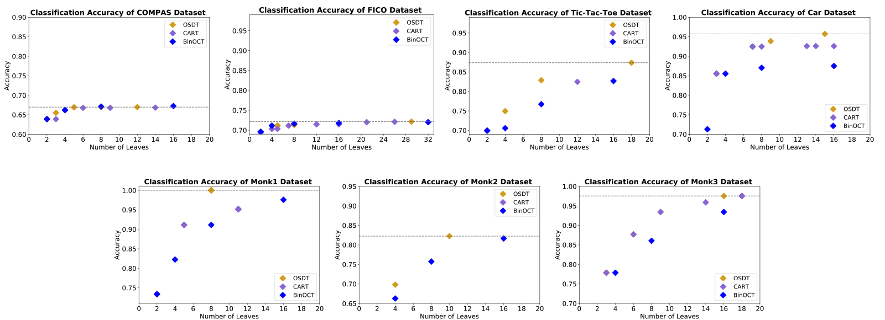
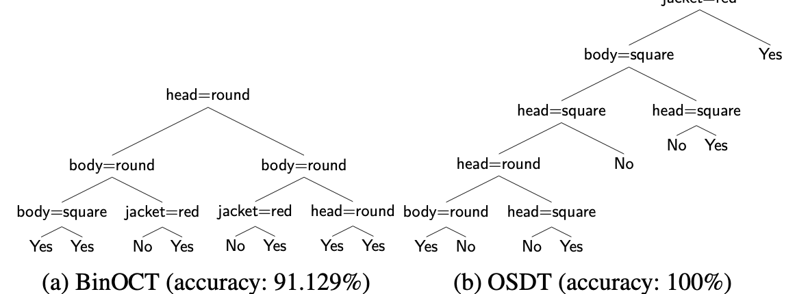

- Monk1 で訓練精度 100%BinOCT の深さ 3 の木（葉 8 枚）は 91.129% だった。BinOCT の木には、同じラベルの葉を 2 つ作るだけの分岐が 2 つ含まれていた。
- 先読みの下界を外すと 2,158 倍遅いCOMPAS（\(\lambda = 0.005\)）での切除実験。全体の実行時間が 14.70 秒から 31,721 秒に延び、メモリは 0.08 GB から 10 GB に増えた。
- 葉 8 枚の木の形は 429 通りラベルを付けない二分木の数。葉 8 枚の完全二分木は 1 通りしかなく、形を決める BinOCT は OSDT よりずっと狭い範囲を探している。
貪欲法は根の近くの誤りを後から直せず、数理計画による方法は木の形を決めないと大きな問題を解けなかった
CART や C4.5 は木を上から下へ伸ばし、後戻りしない。根の近くで最適でない分岐を選ぶと、その誤りを取り返すために余分な分岐を重ね、精度も解釈しやすさも落ちることがある。1990 年代から数理計画で最適な決定木を作る研究が続いてきたが、汎用の最適化ソルバーに頼るので、木を特定の形に絞らないと現実の大きさの問題は解けなかった。
最も成功した BinOCT（Verwer と Zhang）は、決めた深さの完全二分木の中で最適な木を探す。論文によれば、これは OSDT よりはるかに易しい問題を解いている。葉が 8 枚のラベルなしの二分木は Catalan(7) = 429 通りあるが、葉 8 枚の完全二分木は 1 通りしかない。BinOCT は完全二分木を作るために、なくてもよい葉を作ることがある。OCT の論文の図には明らかに最適でない木が載っているが、コードが公開されていないので原因は分からない、とも述べている。DL8 はソースコードが公開されておらず、その著者もメモリ不足を警告している。OSDT は規則のリストを最適化する CORELS の考え方を決定木に広げたものである。
木の形を決めず、誤分類率と葉の数の罰則の和を最小にする木を求める
対象は二値の特徴量 \(x_n \in \{0, 1\}^M\) とラベル \(y_n \in \{0, 1\}\) の 2 クラス分類である。葉の正解率は葉の並び方によらず、木は葉を分けることでしか伸びないので、OSDT は木を葉の集まり \(d = (p_1, \dots, p_H)\) として表す。\(p_k\) は根から葉 \(k\) までの条件の論理積で、葉のラベルはそこに入る例の多数派である。目的関数は訓練データでの誤分類率 \(\ell\) に、葉の数 \(H_d\) への罰則を足したものである。
深さも葉の数も固定しないので、探索空間はあらゆる形の木を含む。ただし \(\lambda\) の大きさから葉の数の上限は事前に決まる。葉を 1 枚増やすと罰則が \(\lambda\) 増えるので、OSDT の木は同じラベルの葉の組を作る分岐を決して含まない。木を探すときは、葉を「もう分けない葉 \(d_{\mathrm{un}}\)」と「これから分ける葉 \(d_{\mathrm{split}}\)」に分けて扱う。子の木は親の木の分ける葉を分けたものだけである。
分けない葉の誤りと葉の数の罰則が下界になり、それが現在の最良値を超える木は子孫ごと捨てられる
OSDT は分枝限定法で目的関数を最小にし、途中で見つけた最良の目的関数の値 \(R^c\) を覚えておく。分ける葉の誤りを数えずに、分けない葉の誤り \(\ell_p\) と葉の数の罰則だけを足したものは、その木から作るどの子の木の目的関数よりも小さい（階層的な下界、定理 3.1）。
- 1 段先読みの下界（補題 3.2）：子の木は葉が少なくとも 1 枚多いので、\(b + \lambda \ge R^c\) なら子孫をすべて捨ててよい。論文はこの下界が実際に強力だと述べている。
- 節点の例の数の下界（定理 3.3）：最適な木では、各分岐を通る例の割合が \(2\lambda\) 以上でなければならない。
- 分岐による正解率の増加の下界（定理 3.4）：最適な木の各分岐は正しく分類される例の割合を \(\lambda\) 以上増やす。増加が \(\lambda\) に満たない分岐なら、その子の葉の少なくとも一方をさらに分ける必要がある。
- 葉の正解の数の下界（定理 3.5）：最適な木の各葉で正しく分類される例の割合は \(\lambda\) 以上でなければならない。
- 同値な点の下界：特徴量がまったく同じでラベルが違う例があれば、どんな分類器でもそのうち少数派の数だけは間違える。この数を誤りの下界に使う。
- ほかに、葉の並べ替えで同じになる木は 1 つだけ調べればよいという下界と、葉の数の事前の上限を使う。
計算の再利用、専用のデータ構造、探索の順序の工夫で、実行時間の 97% 超を減らした
評価した木はプレフィックス木（trie）に下界などとともに保存し、子の木の計算に使い回す。どの木から調べるかは優先度つきのキューで決め、葉の並べ替えで同じになる木は対称性を考えた表でまとめる。木の評価にはビットベクトルのライブラリを使う。論文はこれらの工夫で実行時間の 97% 超を減らしたと報告している。CART の解の目的関数の値を最初の \(R^c\) に使うので、途中で止めても CART より悪い木にはならない。
キューの順序（スケジューリング）には、下界の小さい順のほか、論文が curiosity と呼ぶ指標を使える。COMPAS（\(\lambda = 0.005\)）では、curiosity を使うと下界の順より最適な木がずっと早く見つかった。下界の順では評価した木の下界が単調に増え、下界が十分に大きくなって残りを捨てられるか、キューが空になった時点で最適性が証明される。
多くのデータで BinOCT と CART の木はどれも最良の OSDT の木の訓練精度に届かず、BinOCT は不要な分岐を作っていた
UCI の 5 個（Tic-Tac-Toe、Car Evaluation、Monk1〜3）と、ProPublica の再犯データ（COMPAS、2 年以内の再逮捕、\(N = 7{,}215\)）、FICO の信用リスクのデータの計 7 個で、CART、BinOCT と比べた。制限時間は BinOCT と OSDT ともに 30 分である。BinOCT は 8 スレッドを使うが、OSDT は 1 スレッドで動かした。それでも OSDT の速さは BinOCT に見劣りしなかったと論文は報告している。
図1 の横線は最良の OSDT の木の訓練精度で、多くのデータでは BinOCT と CART の木がどれもこの線より下にある。一方で、既存の方法の木が最適か最適に近い場合も多いことも、OSDT で確かめられるようになった。葉 8 枚の木で比べると、Tic-Tac-Toe では BinOCT が 76.722%、OSDT が 82.881% だった。Monk1 では BinOCT の木が 91.129% で、左右の分岐はどちらも同じラベルの葉を 2 つ作るだけだった。OSDT の木は 100% だった（図2）。COMPAS（\(\lambda = 0.005\)）で OSDT が求めた最適な木の訓練精度は 66.90% である。


先読みの下界と同値な点の下界の効果が特に大きく、片方を外すだけで最適解までの時間が 2 桁以上延びた
COMPAS（\(\lambda = 0.005\)、curiosity、CART の解を使わずに開始）で、下界を 1 つずつ外して比べた（付録の Table 2、arXiv 版）。すべての下界を使うと全体の実行時間は 14.70 秒、最適な木が見つかるまで 1.01 秒、メモリは 0.08 GB だった。1 段先読みの下界を外すと全体で 31,721 秒（2,157.89 倍）、最適な木まで 187.18 秒、メモリは 10 GB になった。同値な点の下界を外すと、12,475 秒を超えたところで約 64 GB のメモリを使い切って止まった。ほかの下界を外したときの遅れは 1.16〜2.17 倍だった。
COMPAS のデータを複製して例の数を増やしても、特徴量を増やしても、OSDT は動いた（論文 Fig. 3）。実行時間は理論上は特徴量の数に対して指数的に増えうるが、最適な木に使われない特徴量を足すと、かえって枝刈りが進んで早く最適な木に着く場合もあった。特徴量が 4 個のときは実行時間の約 75% を最適な木に着くまでに使ったが、12 個のときは約 5% で着いた。付録の交差検証では、同じ葉の数で訓練精度が高い木ほどテスト精度も高い傾向があったが、いつもそうとは限らなかった。
OSDT は深さではなく葉の数への罰則で疎な木を最適化する系統を開き、GOSDT や TreeFARMS へとつながった
- 解き方：木を葉の集まりとして扱う分枝限定法。CORELS 由来の下界に、葉の組を扱う決定木に固有の下界を加える。
- 目的と制約：誤分類率 ＋ \(\lambda\) × 葉の数。深さや木の形は決めない。
- 限界：二値の特徴量と 2 クラス分類が前提（多クラスへの一般化は可能と論文は述べる）。論文は、相関の強い特徴量が互いに置き換えられるという定理 F.1 にもとづく下界で、さらに大きなデータに広げられる可能性を挙げている。
- その後：GOSDT（2020）は目的関数を広げて動的計画法で速くし、GOSDT-guesses（2022）はしきい値と下界の推測でさらに速くした。TreeFARMS（2022）は最適値に近い木をすべて列挙する。
@inproceedings{hu2019optimal,
title = {Optimal Sparse Decision Trees},
author = {Hu, Xiyang and Rudin, Cynthia and Seltzer, Margo},
booktitle = {Advances in Neural Information Processing Systems},
volume = {32},
year = {2019}
}
本文の数値と図は NeurIPS の出版版による。下界ごとの切除実験（Table 2）と交差検証は、出版版にない付録として arXiv 版（1904.12847 v6）に載っている。書誌は NeurIPS の予稿集のページで確認した（頁番号は載っていないので省いた）。著者はアルファベット順と脚注にある。